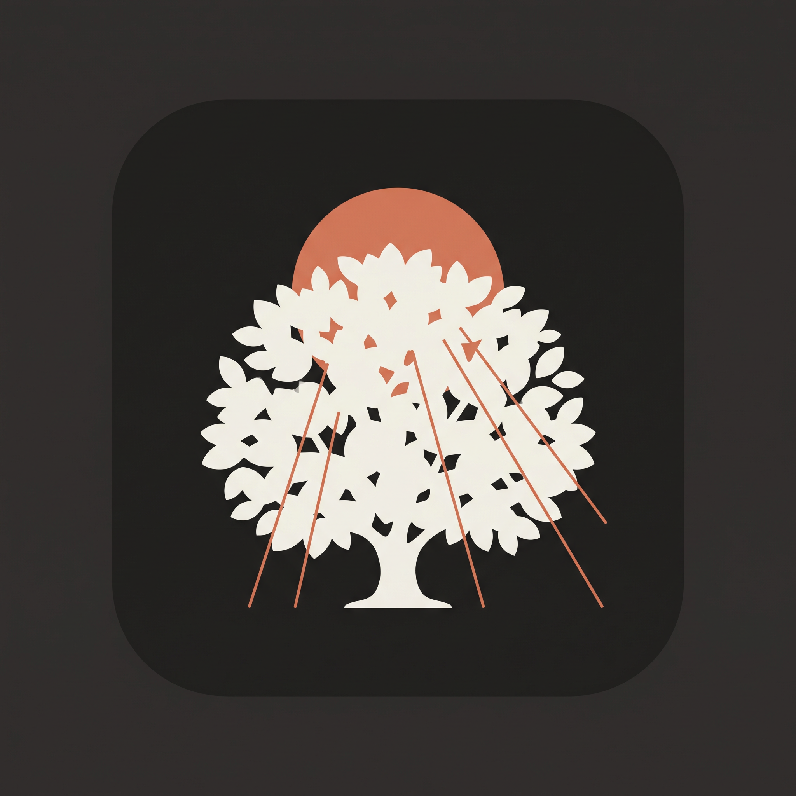

<body style="margin:0;background:#2a2926;padding:16px"><div style="display:grid;grid-template-columns:repeat(5,300px);gap:14px"><figure style="margin:0;display:flex;flex-direction:column;gap:6px;align-items:center"><figcaption style="font:12px sans-serif;color:#ccc">croise-01-soleil-lisiere</figcaption></figure><figure style="margin:0;display:flex;flex-direction:column;gap:6px;align-items:center"><figcaption style="font:12px sans-serif;color:#ccc">croise-02-canopee-lumineuse</figcaption></figure><figure style="margin:0;display:flex;flex-direction:column;gap:6px;align-items:center"><figcaption style="font:12px sans-serif;color:#ccc">lisiere-01-raffinee</figcaption></figure><figure style="margin:0;display:flex;flex-direction:column;gap:6px;align-items:center"><figcaption style="font:12px sans-serif;color:#ccc">lisiere-02-feuillage</figcaption></figure><figure style="margin:0;display:flex;flex-direction:column;gap:6px;align-items:center"><figcaption style="font:12px sans-serif;color:#ccc">lisiere-03-geometrique</figcaption></figure><figure style="margin:0;display:flex;flex-direction:column;gap:6px;align-items:center"><figcaption style="font:12px sans-serif;color:#ccc">lisiere-04-ligne</figcaption></figure><figure style="margin:0;display:flex;flex-direction:column;gap:6px;align-items:center"><figcaption style="font:12px sans-serif;color:#ccc">lumiere-01-raffinee</figcaption></figure><figure style="margin:0;display:flex;flex-direction:column;gap:6px;align-items:center"><figcaption style="font:12px sans-serif;color:#ccc">lumiere-02-rayons</figcaption></figure><figure style="margin:0;display:flex;flex-direction:column;gap:6px;align-items:center"><figcaption style="font:12px sans-serif;color:#ccc">lumiere-03-negatif</figcaption></figure><figure style="margin:0;display:flex;flex-direction:column;gap:6px;align-items:center"><figcaption style="font:12px sans-serif;color:#ccc">lumiere-04-aube</figcaption></figure></div></body>